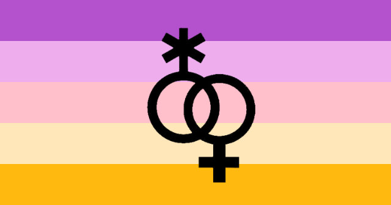
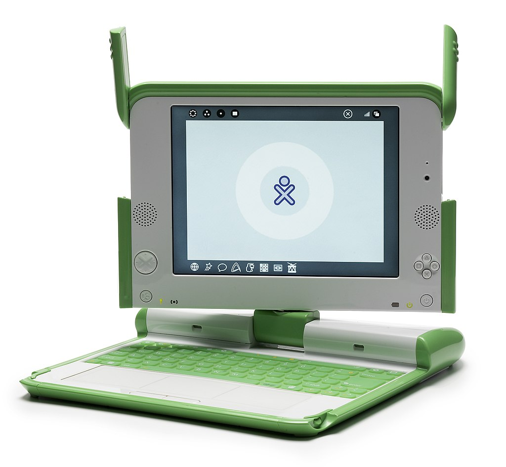
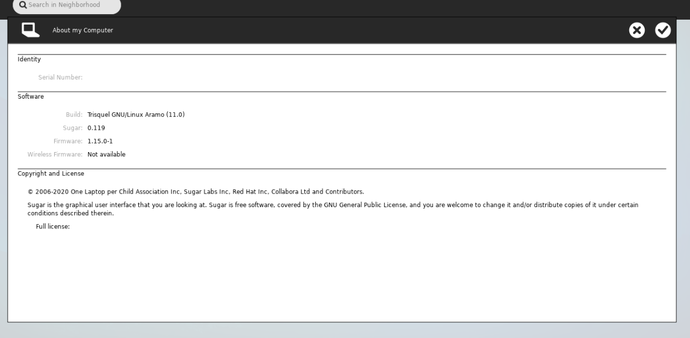
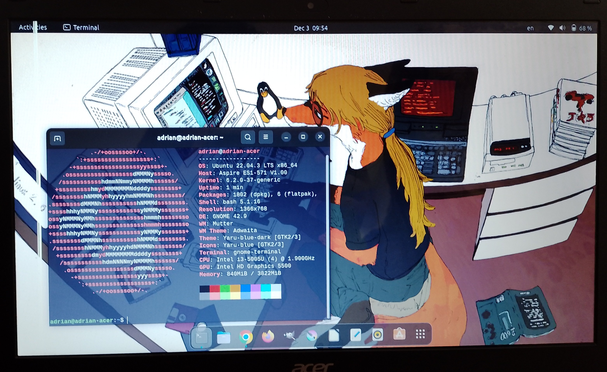
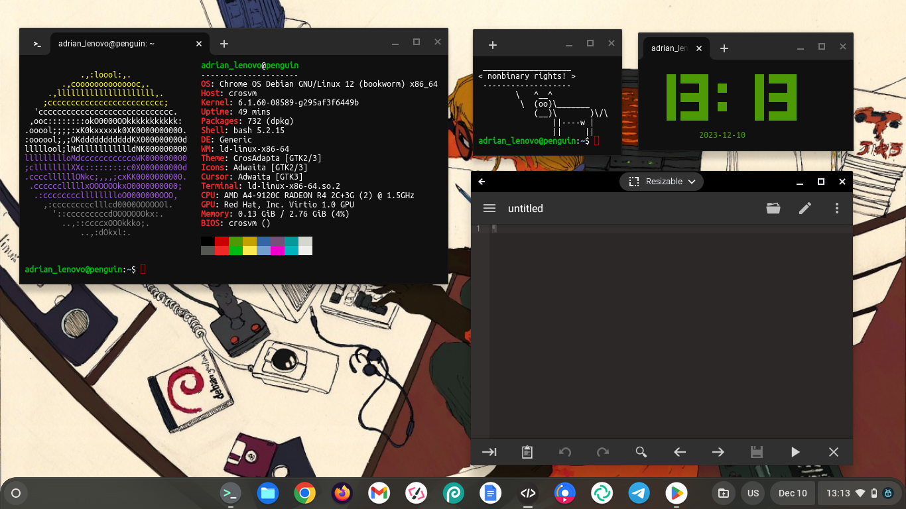
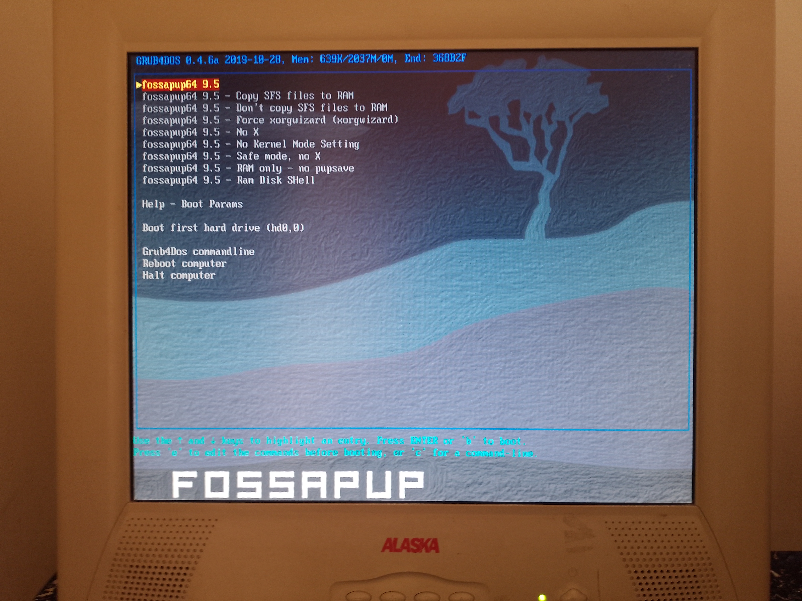
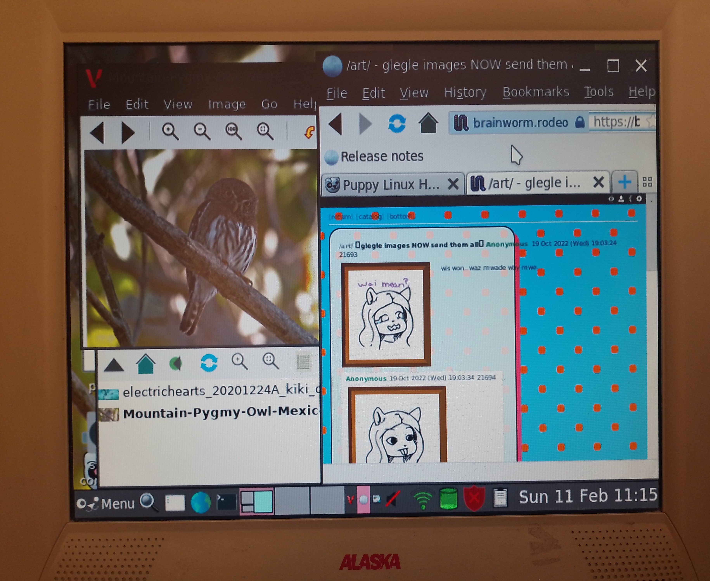
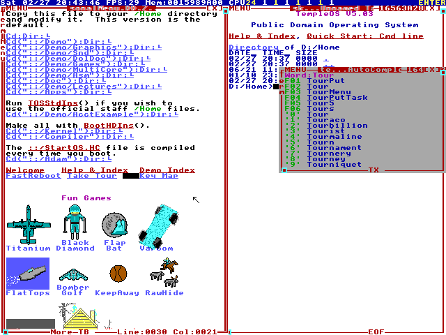
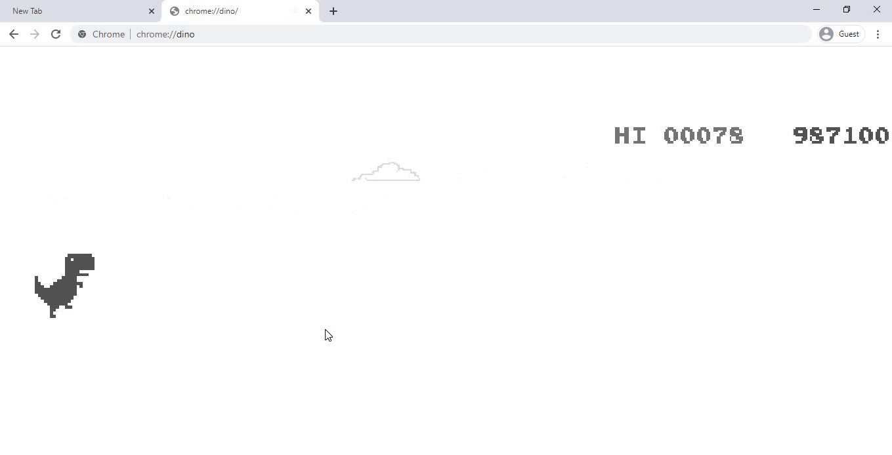
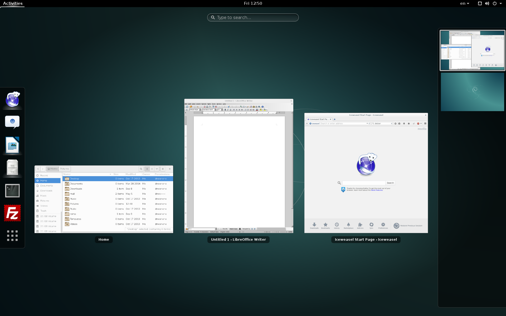

The free sharing and teaching of open source is incompatible with the notion of the solitary genius. ~Golan Levin

nonbinary flag: Kye Rowan, Public domain, via Wikimedia Commons. asexual flag: AnonMoos (SVG file); AVEN (flag design), Public domain, via Wikimedia Commons. trixic flag: unknown, public domain

Photo credit: "Mike McGregor"; upload to OLPC-Wiki: OLPC user "Walter", CC BY 2.5
hello, im adrian, or online known too as adrrdgz and im nonbinary, trixic, and asexual (any pronouns) and i was born in 2003.
i know a lot of things about programming, open source software, and much more i am always promoting open source software and open hardware, i like old classic laptops to flash linux on it my favorite computer/laptop is the "olpc-x01", mainly because of its size, functions and of course, the linux and open source sofware that it uses. i hope someday i can buy one and flash debian with gnome on it. i am always happy to share oss with other people.
thats the reason why i chose to make my own website, to share helpful guides, tutorials, or reviews, all regarding open source software. i also post about much more casual topics.
this website uses the date format day/month/year.this website is official, and the other websites i use are the only ones in which im in.

a trisquel gnu/linux virtual machine running on the sugar desktop environment

acer laptop running ubuntu

lenovo chromebook running chromeos

puppy linux grub screen running on an old crt pc

puppy linux actually running on old pc
the posts are ordered from newest to oldest.
photo credit: zorin os 16 screenshot, from linuxiac
yes, and while i do admit that i love ubuntu and i really love its desktop environment, snap packages, and huge community support. a brand new distro is here and it's doing cool things!!
and why should you care/install it? you see, zorin os is not a community made distro or a distro made by one person, it's a distro made by a company, the same way as canonical, just a little bit more independent. they not only offer the zorin os iso image for free, they also have a paid version that comes with a lot of open source software and technical support. they are a company from ireland
it's simple!! the operating system runs the gnome desktop environment, albeit a bit modified to suit the looks of zorin os, which is very user-friendly and most people like that. the paid version also lets you change the style. (chrome os style, ubuntu gnome style, etc)
overall, zorin os just got its crown for being a good beginner friendly distribution along with linux mint and ubuntu. it's great for most people and it's easier to use than other systems! rating?? 9/10. good distro.

photo credit: wubuntu screenshot, from wubuntu website
from the official wubuntu website: Wubuntu is an operating system based on Ubuntu LTS that has a similar appearance to Windows using the open-source themes. Wubuntu also comes with a set of advanced tools called PowerTools that allows you to use features such as Control Panel and Windows-style network and general settings...
basically what this is is just a reskinned ubuntu-based distribution that tries its best to look as similar as possible to the proprietary operating system windows 11. which it does fairly well, and honestly props to the developers for doing so because it looks extremely similar to it.
it looks like windows 11 and has most apps pre installed such as microsoft edge, teams, and much more, and while it does use the unix-like terminal, it still can be used fairly well without it.
but other than that, it looks like a standard and classic ubuntu distro, with the kde plasma desktop environment modified to look like windows 11.
the developers can get in legal trouble since it uses both intellectual property trademarks which are ubuntu and windows!! while it is an innovative operating system and it does things well, it can be problematic to use it.
without disrespecting the hard work and contribution to the open source community, i'm going to say that if you are looking for an alternative to proprietary systems such as windows. i would suggest checking out zorin os. which is similar to mac os in the way that it's very simple to install and to use.
i will not, and although you can find the iso file and website quickly on the internet, i think that they are in legal trouble and could be harmful to link it. but that doesn't mean that i dislike the developers or authors behind it, i just think that they should do original stuff so that they won't get in trouble.
before i say anything, i will never lie when i say that i dont use instagram or facebook or tiktok.
if you see the "contact" and "other websites i use" part of the website, you will see that i only use github, is this true?? well yes, partly, because i used to have reddit. and sometimes if i want to ask something/get help i talk about it on either irc or "no sign-in" forums like 4chan, of course i don't spend all the day on these websites. only when:
olpc: one laptop per child was a non-profit initiative that consisted of giving cool and affordable laptops to children all around the world in order to give intelligence to those kids.
this initiative began in the year 2005, it began in miami, florida. the sad thing about this initiative is that the average laptop price around that time was 1 thousand american dollars,which is a lot!! so that's why those guys had to create their own laptops which had to be extremely cheap, and they made the olpc-xo laptop, which is also known as the 100 american dollars laptop, which, to be honest is very cheap. this initiative thus was funded by sponsors such as amd, ebay, google, red hat, and quanta. sadly, after really bad sales, this foundation shut down in 2014, which is bad because the laptops were very pretty

Terry A. Davis, Public domain, via Wikimedia Commons
templeos is an operating system made by software engineer terry a davis, who sadly had schizophrenia and would go on rants and insult people. but he did a very amazing operating system, despite his mental problems and fogness, he wrote the entire operating system by himself and made it both open source and public domain. he also made his own compiler and programming language holy C, which allows 3d graphics and other very cool things. sadly he became homeless and lived on his van for 3 years before passing away in an accident.
he contributed a lot to the hobbyist programmer commnunity and helped people code stuff of their own, and despite problems and things terry said. his brilliance and knowledge of code is astonishing and amazing.
templeos consists of mostly ascii characters arranged in such a way that they form a graphical user interface with both windows and a cursor. it has a few games built in which use the HOLY C language to work, sadly it doesnt have any networking or file sharing capabilities, which meant it was very hard to hack it or crack it. terry, would often suggest the people running templeos to dual boot to another open source operating system, like linux in order to both enjoy templeos and use network capabilities with linux.
Ken Vermette based on the OpenStreetMap logo, CC BY-SA 2.0, via Wikimedia Commons
openstreetmaps is a pretty cool protocol that uses volunteers and other people that map the entire world, its been recorded in most, if not all, countries. thats what makes it great, its truly free, truly open, and helps people & communities.
sadly in a lot of countries, data about people and culture, streets, etc, is often private and has to be asked from an external person and they arent open by themselves (not visible to the public)
most openstreetmaps volunteers not only trace maps or find streets. sometimes they also do cool stuff like knowing the schedule, date, and more of public transport, knowing which places are and aren't safe.
but... can i just volunteer myself and map stuff that hasnt been mapped?
yes!! thats an awesome question, any person, no matter the knowledge or programming level, can contribute and trace any place, that makes it very valuable. because anyone can just go to any place (legally of course!!) and map it.
chromium (or otherwise known as google chromium) is the open source/free software version google chrome, both google chrome and chromium share a lot of things together, since chromium was made by google themselves, google chrome isnt very different from chromium.
but lets talk about whats in the title, and u know what it is!! if you are a google chrome or chromium user, u may notice that sometimes when you are offline, the site displayed will tell u that you are offline and will show cute dinosaur pixelart. well this is an easter egg!!, press space and u will begin to play a simple running game in which u control the dinosaur and you are running through the northern mexican desert (which fun fact, dinosaurs lived there for thousands of years!!) jumping cactuses and crouching when u see pterodactyls.
it became a staple of not only internet culture, but browser culture in general, while i dont think firefox uses the dino easter egg, a lot of chromium based browsers do, and im sure they have to keep a lot of chromium easter eggs bcus otherwise google could sue them since they arent following chromiums license (bsd-3).
its a fun easter egg and a very nice thing since that game is completely open source too, yea!! thank you google!!!
Anand Krish, CC BY-SA 4.0, via Wikimedia Commons

termcolor? colored import from termcolor?? not anymore!!
open up your terminal please, i will teach u how to do it.
open up python from the terminal and type this first 'TGREEN = '\033[32m'' without the first quotation marks pls!!
then, dont use that variable yet please!! now type 'ENDCOMMAND = '\033[m'' (this makes the input command go back to the default color, it wont stay green!!)
in the command line type the following print line 'print (TGREEN + 'ur text here, green of course!!', ENDCOMMAND)'
and when u execute it. your code will be green and the input will be the default color, this is a great option for people who want to write software but dont want to tell people what modules to install!! yes its so nice!!
i deeply apologize for not posting anything, ive been busy with school!! but its fine
btw this tutorial only works if youre using chromeos in the beta channel, and dont worry!! no developer mode is required, but chu will have to enable some things first
quick guide tips:
after that... a terminal window will pop up!! youre in now!! the linux environment is installed, now just type in these commands and you'll be good!!
then, after waiting for a few minutes, you will see the programs installed in a folder called "linux apps". and you will be able to use them!! so enjoy pls!!

Rprpr, CC BY-SA 4.0, via Wikimedia Commons
debian is one of the oldest operating systems that are based on linux, since its open source, its been built by the community and by a lot of developers, which means that theres a way of running on your android device without paying anything, not even rooting!!
debian was made in 1994 by american engineer ian murdock, ever since, its been built by a lot of people and its still worked on, the current version is bookworm, or debian 12. and we will be using that version.
after installing andronix from the google play store, we will open it, we tap on the button that says "linux distribution", and then tap on "debian", then we tap on "desktop environment", using a desktop environment is useful because we will see the graphical interface.
after this, a list of various desktop environments will appear. what is a desktop environment? in simple terms, its just the way graphical elements are displayed, its the graphic user interface that will be used. for this test, we will use "xfce", which is the most similar to windows and easiest to use.
the next page will say "termux execution", and a text will be copied to your clipboard, this is useful.
we copy that command and then open termux and paste it on the terminal and press enter. it will load and a list will start appearing, dont worry, this is normal, its installing.
when the script finally gets installed, everything on the termux screen will be cleared and youll get a username like root@localhost
we go back to andronix and tap on the orange button that says "next", we have to be on a page that says "start vnc server", in that page, another command will be copied to our clipboard, we open termux while we are on the debian shell and paste it there, the command is vncserver-start
open rvnc viewer and on the main screen tap on the green button with the "+" sign. it will ask you to make a new connection, type "localhost:1" and give it a name.
now we just tap on the green button that says connect.
wait a few seconds and... now youre running debian on your phone!! its great!
if there are problems or bugs, please visit andronix.app and there are more docs there for help.
The chromium authors/Google, CC BY-SA 4.0, via Wikimedia Commons
chromeos is an operating system which is also a distribution of linux, which uses the linux kernel. it was made by google and it began as an open source project called "chromiumos". its repository is still available and still being worked on today.
while most linux distributions are heavily focused on using files and the terminal locally, chromeos is much different because it mostly focuses on the internet and cloud services. thats why computers that use chromeos usually have little storage.
you can install chromeos for your computer. google themselves give you a guide on how to install it!
despite those bad things, i really like chromeos and the fact that it looks very similar to android, im happy that they are using linux and promoting open source, im using chromeos currently and i like it!!
overall, i would give chromeos a score of 8.5/10. if you have the chance to try it out or buy a chromebook laptop, then please do so. thank you!!
GitHub, CC BY 4.0, via Wikimedia Commons
check my github repository for more interesting projects
| cardio | squats | pushups | other |
|---|---|---|---|
| running, hiking | 60-100 daily | 40-80 daily | standing desk, lunges |